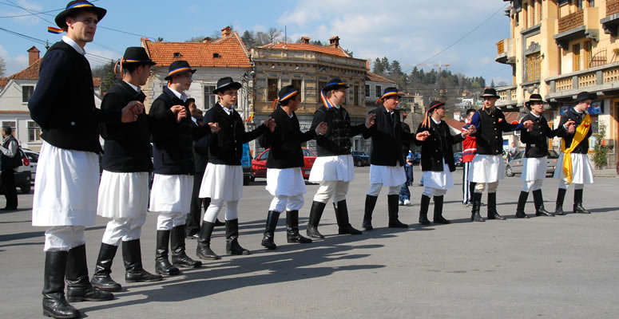
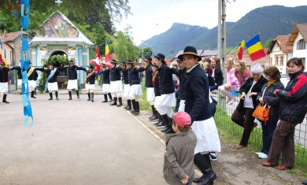
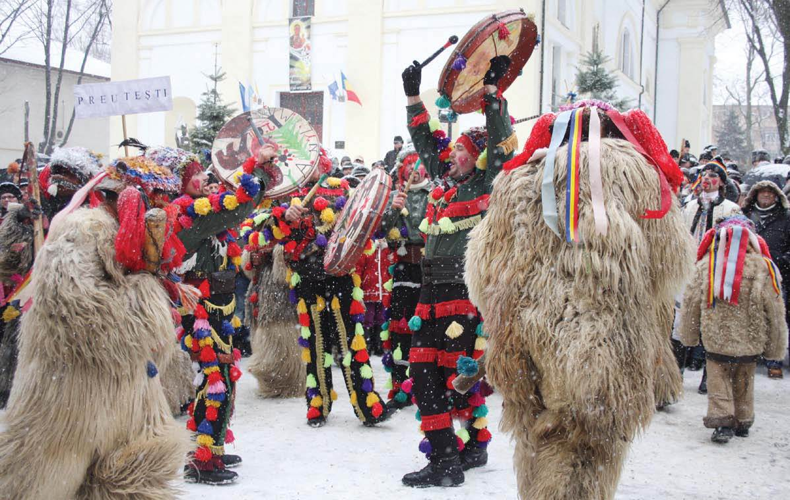

Braşovul de astăzi păstrează vii tradiţiile sale multiculturale.
- JUNII BRAŞOVULUI 
- SĂRBĂTOAREA MESTECENILOR (Balul mestecenilor) 
- BALUL ZORITORILOR (Comuna Cristian)
- Capra sau ţurca 
Este un obicei străvechi care se pierde în negura vremurilor, este considerat pe bună dreptate ca având o valoare unicat în România, ce aminteşte cu prisosinţă de valorile trăirii dacice pe aceste meleaguri.
Prima menţiune documentară datează din anul 1728 şi se află într-un hrisov din arhiva Primei Şcoli Româneşti din Schei. În acest hrisov, Junii sunt amintiţi ca "o rânduială din bătrâni". Printre altele, se mai consemnează în acest document despre Juni: "Să-i lăsaţi să treacă fără oprială, frumos, pe rând cum se cade, iar cine se va îngădui să treacă cu sfintele cruci prin această grădină, unul ca acela să fie blestemat de Domnul şi de cei 318 sfinţi". Este vorba de trecerea Junilor călări spre Pietrele lui Solomon, unde au loc serbările Junilor, în miercurea de după Paşte.
Bogata tradiţie folclorică a Junilor, la origine ritual de iniţiere în rândul feciorilor, se trage din "Schei", vatră a civilizaţiei materiale şi spirituale a românilor. În fiecare an, în duminica Tomii de după Paşte, Junii coboară în "Cetate", reiterând un spectacol cu elemente de mit, rit, ceremonial şi magie, care deschide în fiecare primăvară, "Zilele Braşovului".
An de an, în prima duminică de dupa Paştile Răsăritene, braşovenii şi turiştii veniţi pentru a vizita Braşovul se adună în Scheii Braşovului pentru a fi martori la un spectacol care reuneşte cu succes mitul şi magia.
În dimineaţa sărbătorii Junii coboară călare în cetate, trecând pe la Vătaf mai întâi, apoi pe la armas mare şi, în cele din urmă pe la armasul mic, iar după aceea, pe la ora 10 se îndreaptă spre Piaţa Unirii, în faţa Bisericii Sfântul Nicolae, acolo înconjurând statuia eroului necunoscut, iar preotul paroh le sfinţeşte steagurile.
Această sărbătoare are la bază câteva principii simple, dar care au dăinuit peste ani. Pe vremuri, feciorii satului se organizau în ceată/cete şi se duceau în pădure după mesteceni, pentru ai aduce acasă şi pentru ai "bate" la porţile fetelor de măritat. Ceata de flăcăi era condusă de un Vătaf, care era ales de către ceilalţi feciori, iar conform tradiţiei Vătaful poate fi ales doar o dată în viaţă şi doar pentru un an de zile. Cu o zi înainte de rusalii, feciorii treceau cu carul tras de boi/cai sau chiar călare unii dintre ei pe la fiecare fată de măritat din sat, punându-i la poartă un mesteacăn, în acest fel arătându-se că acolo este o fată de măritat.
În urma "baterii" de mesteceni la porţile fetelor de măritat, acestea erau invitate de către feciori la Balul Mestecenilor ce se organiza în următoarea sâmbătă pentru a petrece împreună. Balul era întotdeauna foarte aşteptat întrucât se alegea Prinţesa Balului cea mai frumoasă fată din sat.
La Balul Mestecenilor, feciorii comunei Cristian, mândri de portul popular erau prezenţi în straie naţionale şi susţineau spectacole populare specifice Cristianului dar şi zonei ardelenesti.
Tinerii din comună păstreaza cu sfinţenie tradiţia , iar evenimentul este organizat anual, în a doua sâmbătă după Anul nou.
Participanţii primesc invitaţiile în Ajunul Crăciunului, când zoritorii merg din căsă-n casă la colindat.
Cu banii primiţi de la gazde, se pregăteşte balul, unde, la miezul nopţii, se cântă colinde.
Este unul dintre cele mai cunoscute obiceiuri braşovene. Datina este perpetuată şi de cetele de colindători care umblă în aceste zile pe străzile Braşovului. Sărbătorile de iarnă încep în zona Braşovului, de fapt, de Sfântul Nicolae, atunci când se constituie cetele de feciori, care urmează să colinde. "Capra" este unul dintre obieciurile întâlnite aproape în tot judeţul. Tot în jurul Braşovului se mai merge la colindat şi cu "Ursul", animalul-rege al munţilor Carpaţi. Se spune că prin aceste colinde se mai păstrează încă, nevoile spirituale de altădată ale omului. Jocul "Caprei" (uciderea, bocirea, înmormântarea, învierea) la origine a fost, desigur, un ceremonial grav, un element de cult. În cadrul sărbătorilor agrare jocul a devenit un ritual menit să aducă rodnicie anului care urmează, spor de animale în turmele păstorilor, precum şi succesul recoltelor.